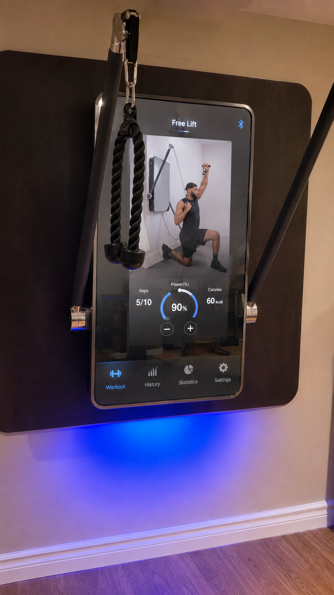
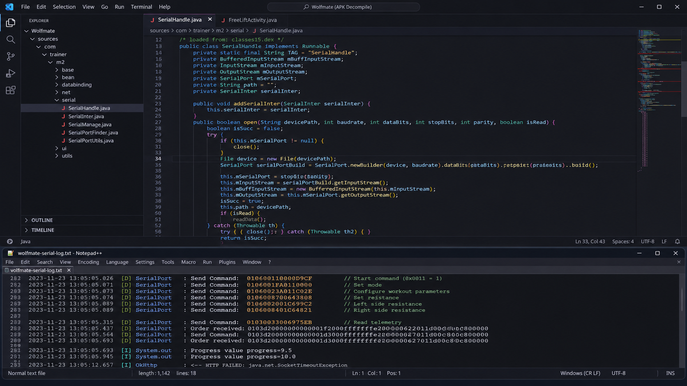
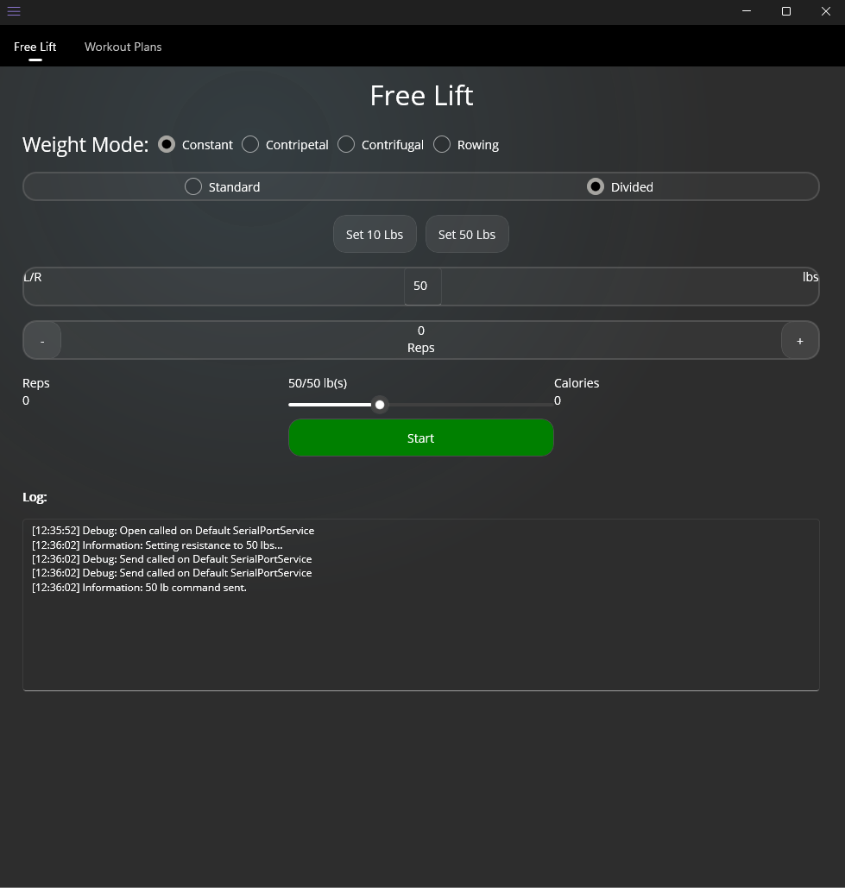

Start / Stop
Direct machine state control.
Cyberus Labs R&D Project
Smart Fitness Hardware Control Platform
An experimental Cyberus Labs project exploring how to restore direct control over app-dependent fitness hardware after the original software ecosystem became unavailable.
Tech Stack
01 / The Problem
The Wolfmate M2 is a software-controlled smart resistance training machine. The physical hardware remained functional, but its smart resistance and workout controls depended on the manufacturer's original software ecosystem.
When that supporting app/service became unavailable or unusable, important control features were effectively stranded.
The engineering goal became restoring direct control: could the machine be controlled directly without relying on the original software stack?

02 / Investigation
The first challenge was understanding how the Android-based controller actually communicated with the machine. Investigation of the original application exposed the serial communication layer, including the hardware path later used for direct testing.
Captured command/response traffic helped establish enough of the control behavior to communicate with the machine directly, without turning the work into a public protocol specification.
The hardware communication path that made direct control testing possible.

03 / Breakthrough
Hercules uses the recovered communication path to act as a purpose-built controller for the existing hardware. Once the control path was identified, direct serial commands were successfully used to operate core machine functions and read live state information.
Direct machine state control.
Independent resistance commands for each side.
Readback from the machine for live state information.
Machine value ≈ pounds × 45.35
Resistance values required mapping between human-readable pounds and machine control values.
04 / Prototype
A .NET MAUI Android prototype was built to provide direct control over the machine. The interface demonstrated Free Lift control, mode selection, standard/divided resistance control, resistance adjustment, rep tracking, calories, telemetry, and start/stop operation.
The prototype showed that the recovered control layer could be translated into a usable replacement-control experience. It remained an engineering prototype rather than a completed commercial product.
Implemented
Prototype / In Progress
My Contribution
As an independent Cyberus Labs project, Hercules involved reverse engineering, Android application analysis, serial communication investigation, protocol analysis, hardware/software integration, C# / .NET MAUI application development, controller implementation, UI/workflow design, and testing against the physical machine.

05 / Current Status
Hercules is currently paused and may not be continued. The project successfully demonstrated direct communication with the machine, software-driven resistance control, start/stop operation, and telemetry access. Further productization and feature development were not completed.
The technical proof-of-concept succeeded: the machine could be controlled independently of the original app ecosystem.
06 / Takeaway
Hercules demonstrates reverse engineering, systems thinking, hardware/software integration, serial communication, protocol analysis, debugging, Android / .NET MAUI development, and turning investigation into a functioning prototype under real-world constraints.